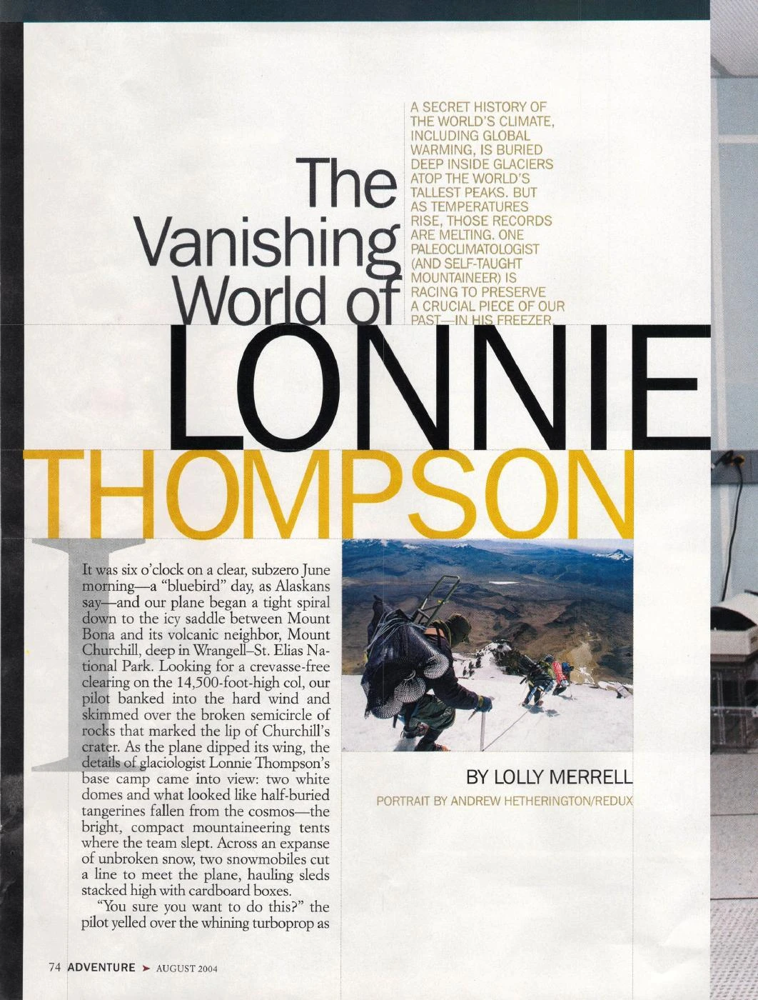

The Vanishing World of Lonnie Thompson

A journey to glaciologist Lonnie Thompson’s high-altitude Alaska camp, where a team is racing to preserve the climate history locked inside the world’s disappearing glaciers.
View PDF here »PDF · 1.2 MB← Back to Profiles